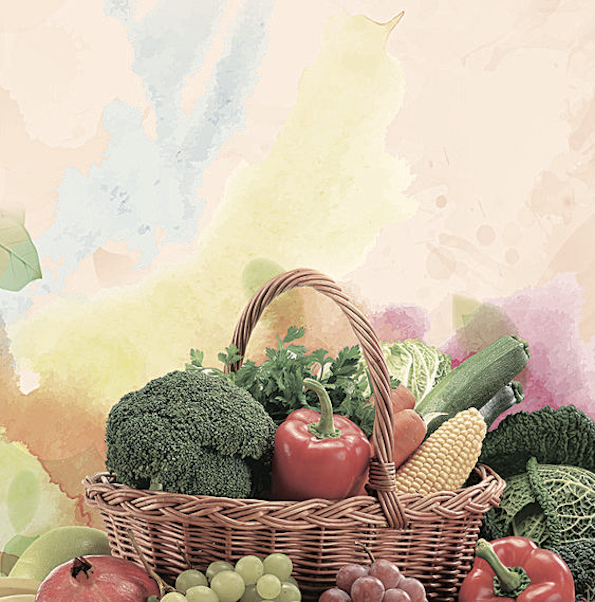

Verduras & Frutas
Soy vegetariana - no como nada de carne asi que tengo
que ser mas original a la hora de cocinar. Las verduras
y frutas son an variadas tantos colores sabores que te
dan muchas opciones.
Estos alimentos son muy verastiles y facilita mucho poder hacer platos buenos e innovadores cada día.

Mis Verduras Favoritas
Esparragos
Guistantes
Calabacin
Espinacas
Mis Frutas Favoritas
Naranjas
Fresas
Pinya
Kiwis
Ubas
Mis Recetas Favoritas
hola hola caracola esta es mi primera pagina web!!